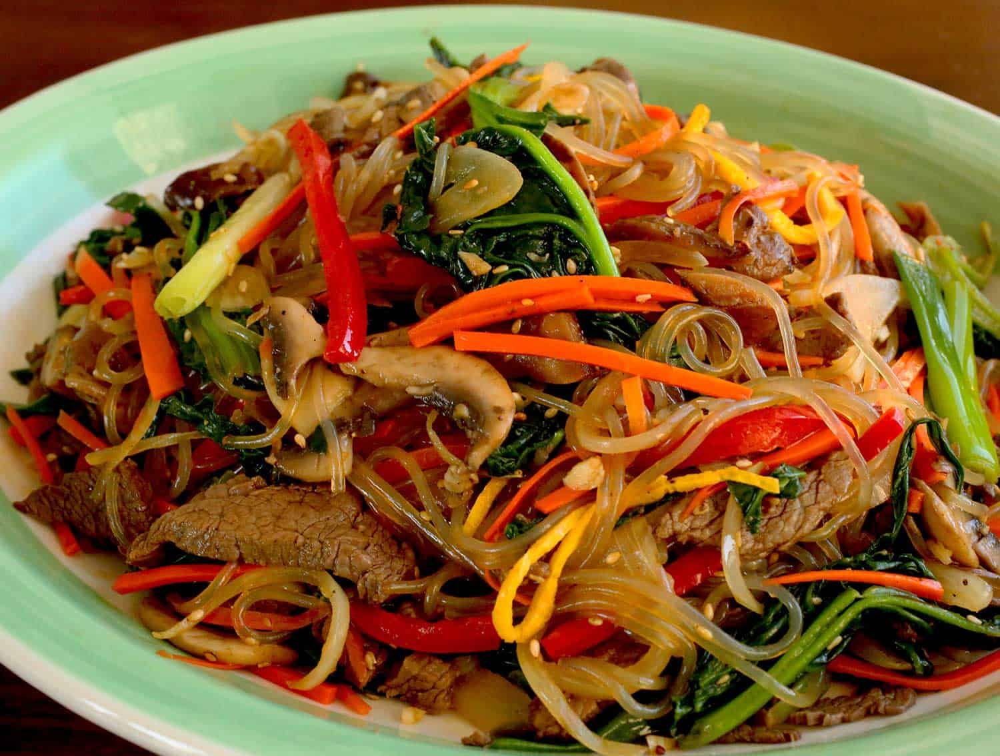

Japchea
Home
Japanese Curry

Japchae, sweet potato starch noodles stir fried with vegetables and meat, is one of Korea’s best-loved dishes.
If anyone asks me to recommend a good potluck dish, I don’t hesitate to answer japchae for the simple reason
that
pretty much everyone loves it. At any gathering it’s hard to pass up these chewy, sweet, and slightly slippery
noodles
with colorful stir-fried vegetables and mushrooms, its irresistible sesame flavor, healthy amount of garlic, and
light, refreshing taste.
Ingredients (4 serves)
- 4 ounces beef, filet mignon (or pork shoulder), cut into ¼ inch wide and 2½ inch long strips
- 2 large dried shiitake mushrooms, soaked in warm water for 2 to 3 hours, cut into thin strips
- 2 garlic cloves, minced
- 1 tablespoons plus 2 teaspoons sugar
- 2 tablespoons plus 1 teaspoon soy sauce
- 2 tablespoons toasted sesame oil
- 1 tablespoon toasted sesame seeds
- 1 large egg
- 4 ounces spinach, washed and drained
- 4 ounces of dangmyeon (sweet potato starch noodles)
- 2 to 3 green onions, cut crosswise into 2 inch long pieces
- 1 medium onion (1 cup), sliced thinly
- 4 to 5 white mushrooms, sliced thinly
- ground black pepper
- vegetable oil
- kosher salt
Directions
Marinate the beef and mushrooms:
-
Put the beef and shiitake mushrooms into a bowl and mix with 1 clove of minced garlic, 1 teaspoon sugar, ¼
teaspoon ground black pepper, 2 teaspoons soy sauce, and 1 teaspoon of toasted sesame oil with a wooden
spoon or by hand. Cover and keep it in the fridge.
Make the egg garnish (jidan):
- Crack the egg and separate the egg yolk from the egg white. Remove the white stringy stuff (chalaza) from
the yolk. Beat in a pinch of salt with a fork.
- Add 1 teaspoon of vegetable oil to a heated nonstick pan. Swirl the oil around so it covers the pan, and
then wipe off the excess heated oil with a kitchen towel so only a thin layer remains on the pan.
- To keep the jidan as yellow as possible, turn off the heat and pour the egg yolk mixture into the pan. Tilt
it around so the mixture spreads thinly. Let it cook using the remaining heat in the pan for about 1 minute.
Flip it over and let it sit on the pan for 1 more minute.
- Let it cool and slice it into thin strips.
Prepare the noodles and vegetables:
- Bring a large pot of water to a boil. Add the spinach and blanch for 30 seconds to 1 minute, then take it
out with a slotted spoon or strainer. Let the water keep boiling to cook the noodles.
- Rinse the spinach in cold water to stop it from cooking. Squeeze it with your hands to remove any excess
water. Cut it a few times and put it into a bowl. Mix with 1 teaspoon soy sauce and 1 teaspoon toasted
sesame oil. Put it into a large mixing bowl.
- Rinse the spinach in cold water to stop it from cooking. Squeeze it with your hands to remove any excess
water. Cut it a few times and put it into a bowl. Mix with 1 teaspoon soy sauce and 1 teaspoon toasted
sesame oil. Put it into a large mixing bowl.
- Strain and cut them a few times with kitchen scissors. Put the noodles into the large bowl next to the
spinach. Add 2 teaspoons toasted sesame oil, 1 teaspoon soy sauce, and 1 teaspoon sugar. Mix well by hand or
a wooden spoon. This process will season the noodles and also keep the noodles from sticking to each other.
- Heat up a skillet over medium high heat. Add 2 teaspoons vegetable oil with the onion, the green onion, and
a pinch of salt. Stir-fry about 2 minutes until the onion looks a little translucent. Transfer to the noodle
bowl.
- Heat up the skillet and add 1 teaspoon vegetable oil. Add the carrot and stir-fry for 20 seconds. Add the
red bell pepper strips and stir-fry another 20 seconds. Transfer to the noodle bowl.
- Heat up the skillet and add 2 teaspoons vegetable oil. Add the beef and mushroom mixture and stir fry for a
few minutes until the beef is no longer pink and the mushrooms are softened and shiny. Transfer to the
noodle bowl.
Mix and serve:
- Add 1 minced garlic clove, 1 tablespoon soy sauce, 1 tablespoon sugar, ½ teaspoon ground black pepper, and 2
teaspoons of toasted sesame oil to the mixing bowl full of ingredients. Mix all together by hand.
- Add the egg garnish and 1 tablespoon sesame seeds. Mix it and transfer it to a large plate and serve.